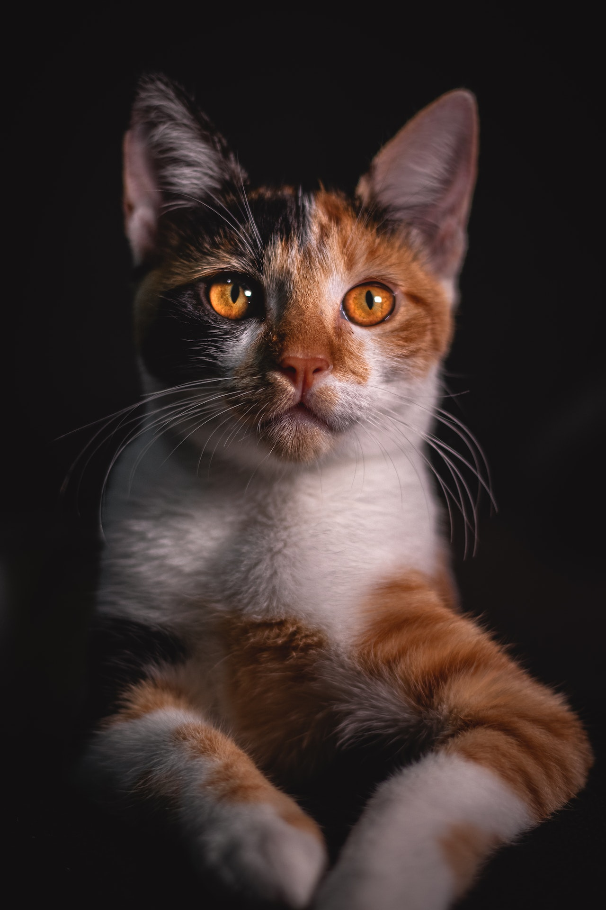
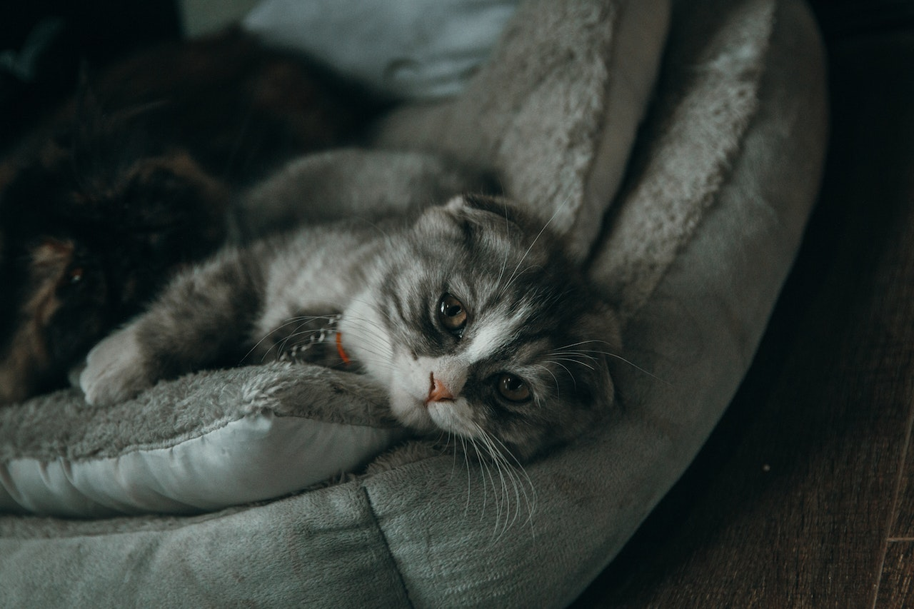

Gato
da família felidaeO gato é um animal carnívoro que faz parte da família Felidae. Existem várias raças de gatos domesticados em todo o mundo, cada uma com características únicas de aparência e comportamento.
Os gatos são animais encontrados em diferentes ambientes, desde lares domésticos até ambientes selvagens. São conhecidos por suas habilidades de caça e agilidade. Os gatos possuem garras retráteis que os auxiliam na captura de presas e na escalada de árvores.
O tamanho e o peso dos gatos variam dependendo da raça. Em média, os gatos domésticos têm altura que varia de 20 a 25 centímetros e peso que varia de 4 a 6 quilogramas. No entanto, existem raças maiores e menores que podem variar nessas medidas.
Os gatos têm uma expectativa de vida que varia de 12 a 15 anos, mas com cuidados adequados, alguns gatos podem viver até 20 anos ou mais.
"Os gatos são animais independentes, graciosos e possuem uma grande capacidade de adaptação."
- Tipo: Mamífero
- Peso médio: 4 kg
- Idade Média: 15 anos
- Família: Felidae
Os gatos são animais fascinantes e têm uma longa história de convivência com os seres humanos. São conhecidos por sua habilidade de caça, flexibilidade e limpeza. Os gatos são animais sociais e podem desenvolver laços afetivos com seus donos.
Além disso, os gatos possuem sentidos aguçados, como a visão noturna e a audição apurada. São animais territorialistas e marcam seus territórios com urina e arranhando objetos.